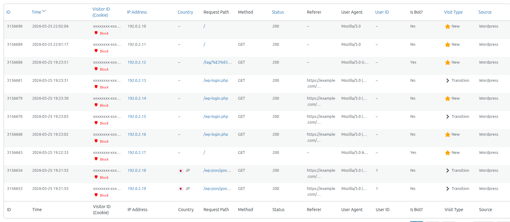
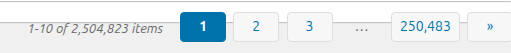

ログ一覧とブロック
アクセスを 1 件ずつ表示する一覧表の各列の意味、並べ替え、ページ送り、そして一覧から訪問者をブロックする方法を説明します。

列の意味
表示する列は、設定タブの「表示カラム」で選べます。→ 表示カラム
| 列 | 並べ替え | 表示される内容 |
|---|---|---|
| ID | できる | 記録の通し番号です。 |
| Time | できる | アクセスの日時です。絞り込みの「表示タイムゾーン」で表示します。初期状態はこの列の新しい順です。 |
| Visitor ID (Cookie) | できる | 訪問者 ID です。先頭の 36 文字まで表示し、マウスを乗せると全体を表示します。下に「Block」または「Unblock」のリンクがあります（このページの下で説明）。 |
| IP Address | できる | アクセス元の IP アドレスです。押すと、その IP アドレスで絞り込みます。 |
| Country | できる | 国旗と国コードです。社内のネットワークなどからのアクセスは「LAN/Private」、分からないときは「–」です。 |
| Request Path | できない | 開かれたページのパスです（70 文字まで）。押すと、そのページを別のタブで開きます。静的ページの記録は URL を表示します。 |
| Method | できない | リクエストの方式（GET、POST など）です。 |
| Status | できる | 応答の状態を表す番号（200、404 など）です。 |
| Referer | できない | 参照元の URL です（50 文字まで）。押すと別のタブで開きます。ないときは「–」です。 |
| User Agent | できない | ブラウザやボットの名前です（70 文字まで）。マウスを乗せると全体を表示します。 |
| User ID | できる | ログインしていたユーザーの ID です。ログインしていなければ「–」です。 |
| Is Bot? | できない | ボットと判定したら「Yes」、人なら「No」です。 |
| Visit Type | できる | ★ New（新規）、Returning（リピーター）、> Transition（ページ遷移）、Unknown（不明）です。マウスを乗せると説明（New Visitor など）を表示します。 |
| Source | できる | 記録の出どころです。Wordpress（WordPress のページ）、Static（静的ページ）、Import（CSV から取り込んだもの）。 |
並べ替え
青い列名を押すと、その列で並べ替えます。
- 並べ替えていない列を押すと、まず小さい順（古い順）になります。もう一度押すと逆順になります。
- 並べ替えても、今見ているページ番号は変わりません。1 ページ目から見るときは、ページ送りで 1 を押してください。
- 絞り込みの条件は、並べ替えても保たれます。
ページ送り

1 ページに 10 件ずつ表示します。2 ページ以上あるときだけ、一覧の下に「1-10 of N items」とページ番号が表示されます。画面に 1 ページの件数を変える欄はありません。
疑わしいアクセスの印
左端に赤い縦線と ⚠ の印が付いた行は、疑わしいアクセスです（印にマウスを乗せると「Potentially suspicious access」と表示）。次のどちらかに当てはまると印が付きます。
- 応答の番号が 400 以上（エラー）。ただし、ボットの 404 は除きます。
- ページの URL に「疑わしいキーワード」を含む。
一覧・合計・グラフから除く「疑わしいアクセス」（絞り込みの「疑わしいアクセスを含める」がオフのとき）は、キーワードだけで決まります。そのため、印が付いていても一覧に表示される行（キーワードを含まないエラー）があります。
訪問者のブロックと解除
訪問者 ID の下の「Block」（赤・盾のアイコン）を押すと、その訪問者をブロックできます。ブロック中の訪問者の行には、緑の「Unblock」（鍵のアイコン）が表示されます。
「Block」を押すと「この訪問者IDをブロックしてもよろしいですか？ブロックされたユーザーはサイトにアクセスできなくなります。」と確認されます。「OK」を押します。
元のページに戻ります。成功したことを知らせるメッセージは出ません。その訪問者の行の表示が「Unblock」に変わっていれば、ブロックできています。
解除するときは「Unblock」を押し、「この訪問者IDのブロックを解除してもよろしいですか？」に「OK」を押します。
| ブロックした後 | 内容 |
|---|---|
| 訪問者に見える画面 | サイトを開くと「Access Restricted」という画面が表示され、ページを見られません（Your access to this site has been temporarily restricted due to unusual activity. …）。「Go to Homepage」のリンクがあります。 |
| ブロックの範囲 | 公開ページ、ログイン画面、静的ページの計測など。WordPress の管理画面そのものは対象外です。 |
| 一覧の管理 | ブロックした訪問者 ID は、設定タブの「ブロック対象訪問者ID」に並びます。そこで直接追加・削除することもできます。→ ブロック対象訪問者ID |
訪問者 ID は、訪問者のブラウザに保存した Cookie で見分けています。相手が Cookie を消したり、別のブラウザを使ったりすると、新しい訪問者 ID になり、ブロックは効かなくなります。しつこいアクセスは、User-Agent によるブロックや、サーバー側での対策と組み合わせてください。
一覧が空のとき
条件に合うログがないと「現在のフィルター条件ではログが見つかりません。」と表示されます。期間を広げるか、条件をゆるめてください。まだ一度も記録されていない場合は「記録されない」を確認してください。